Goal: predict a label or distribution over labels for a given image (probabilty)
Often width (pixel) x height (pixel) x 3 (red, green, blue) arrays,
flattend to one large array where each value is an integer from 0 (black) to 255 (white)
Some challenges for computer vision algorithm (must be invariant to cross product of these while retaining sensitivity to inter-class variations):
Viewpoint variation (orientation of image)
Scale variation (variation of size in image and real life)
Deformation (objects are not rigid bodies)
Occlusion (object can be hidden)
Illumination conditions (effects are drastic on pixel level)
Background clutter (objects may blend into environment)
Intra-class variation (many different types)
Nearest Neighbor Classifier (k = 1)
Takes test image (array) and compares it to every image (array) in training set and takes image label of closest one. It simply remembers all training data
With k = 1 we create “small islands of liekly incorrect predictions, always use higher k
How compare to arrays A and B?
L1 distance/norm:
Sum of over all absolute pixel differences \(d_1(A,B) = \sum_i|A_i-B_i|\) If \(A = B\) than L1 will be zero.
Code
class NearestNeighbor():def__init__(self):passdef train(self, X, y):""" X is N x D where N is number of examples and D flattend pixel array. Y is 1-dimension of size N. Training is just remembering all data"""self.X_train = X self.y_train = ydef predict(self, X):""" X is N x D where each row is an example we wish to predict label for """ num_test = X.shape[0]# lets make sure that the output type# matches the input type Ypred = np.zeros(num_test, dtype =self.y_train.dtype)# loop over all test rowsfor i inrange(num_test):#L1 distances = np.sum(np.abs(self.X_train - X[i,:]), axis =1)# get the index with smallest distance min_index = np.argmin(distances)# predict the label of the nearest example Ypred[i] =self.y_train[min_index]return Yprednn = NearestNeighbor()nn.train(X_train, y_train)y_test_predict = nn.predict(X_test)print(f'accuracy: {np.mean(y_test_predict == y_test)}')
L2 distance/norm: euclidean distance between two vectors. Each pixelwise difference is squared, summed up and finally the square root is taken:
\(d_2(A,B) = \sqrt{\sum_i(A_i-B_i)^2}\)
Code
# new distance L2: we could leave out np.sqrt and get the same final output (monotonic function)distances = np.sqrt(np.sum(np.square(self.X_train - X[i,:]), axis =1))
Difference L1 , L2
L2 unforgiving: prefers many medium disagreements to one big one.
k-Nearest Neighbor Classifier
Find top k closets images and take “majority vote” of labels. Higher k-values have a smoothing effect and make classifier more resistant to outliers.
Training is very fast
Predicting is slow since it compares x_test to each x_training
In practice we want efficient predictions!
Space inefficient
Code
class KNearestNeighbor():""" a kNN classifier with L2 distance """def__init__(self):passdef train(self, X, y):""" same as before """def predit(self, X, k =1):""" returns output of methods: compute_distances and predict_labels"""returnself.predict_labels(dists, k = k)def compute_distacnes(self, X): """ L2 Distance: for each image in test set X calculate the L2 distance to each images in X_train. Return a matrix dists where each row is a test image and each column the L2 of corresponding train image""" num_test = X.shape[0] num_train =self.X_train.shape[0] dists = np.zeros((num_test, num_train))for i inrange(num_test): dists[i, :] = np.sqrt(np.sum(np.square(self.X_train - X[i,:]), axis =1))return distsdef predict_labels(self, dists, k =1): """Returns: array with predicted labels """ num_test = dists.shape[0] y_pred = np.zeros(num_test)for i inrange(num_test): closest_y = []# get the k indices with smallest distances min_indices = np.argsort(dists[i,:])[:k] closest_y = np.bincount(self.y_train[min_indices])# predict the label of the nearest example y_pred[i] = np.argmax(closest_y)return y_pred
We could speed up with broadcasting rules (see lecture notes)
gray regions in visualization of results are caused by ties in majority vote
k-fold Cross Validation (what k to chose?)
Hyperparameters = choiches needed to be made (distances, k, etc.)
Try out different hyperparameters and use best
We further take a small part of training set (e.g. 1000) as validation set which is used as a “fake test set” to tune the hyperparameter
Code
X_val = X_train[:1000, :]y_val = y_train[:1000]X_train = X_train[1000:, :]y_train = y_train[1000:]validation_accuracies = []for k in [1, 3, 5, 10, 20, 50, 100]:# use a particular value of k and evaluation on validation data nn = NearestNeighbor() nn.train(X_train, y_train)# here we assume a modified NearestNeighbor class that can# take a k as input y_val_predict = nn.predict(X_val, k = k) acc = np.mean(y_val_predict == y_val)print('accuracy: %f'% (acc,))# keep track of what works on the validation set validation_accuracies.append((k, acc))
When training data is smaller or computation is not heavy
iterate over different validiation sets and average the performance across these
5-fold: split training into 5 parts, iterate 5 times while changing validation part
In practice it is cleaner to no include the validation set in the final training of the model after determining the best hyperparameters
Code
# k-fold cross validationnum_folds =5k_choices = [1, 3, 5, 7, 9, 10, 12, 15, 18, 20, 50, 100]X_train_folds = []y_train_folds = []# Split up the training data into folds. After splitting,# X_train_folds and y_train_folds should each be lists of# length num_folds, where y_train_folds[i] is the label# vector for the points in X_train_folds[i]X_train_folds = np.split(X_train, [1000, 2000, 3000, 4000])y_train_folds = np.split(y_train, [1000, 2000, 3000, 4000])# A dictionary holding the accuracies for different values of# k that we find when running cross-validation. After running# cross-validation, k_to_accuracies[k] should be a list of# length num_folds giving the different accuracy values that# we found when using that value of k.k_to_accuracies = {}# We perform k-fold cross validation to find the best value of k.# For each possible value of k, run the k-nearest-neighbor algorithm# num_folds times, where in each case you use all but one of the folds# as training data and the last fold as a validation set. Store the# accuracies for all fold and all values of k in the k_to_accuracies# dictionary.for k in k_choices: k_to_accuracies[k] = [] classifier = KNearestNeighbor()for i inrange(num_folds):#we use ith fold as validation set X_cv_training = np.concatenate([x for k, x inenumerate(X_train_folds) if k!=i], axis=0) y_cv_training = np.concatenate([x for k, x inenumerate(y_train_folds) if k!=i], axis=0) classifier.train(X_cv_training, y_cv_training) dists = classifier.compute_distances_one_loop(X_train_folds[i]) y_test_pred = classifier.predict_labels(dists, k=k) k_to_accuracies[k].append(np.mean(y_train_folds[i] == y_test_pred))
in practice on may want to avoid cross-validation in favor of single validation split (computationally expensive)
Size of single split of training data depends how many hyperparameters
For example if the number of hyperparameters is large you may prefer to use bigger validation splits. If the number of examples in the validation set is small (perhaps only a few hundred or so), it is safer to use cross-validation. Typical number of folds you can see in practice would be 3-fold, 5-fold or 10-fold cross-validation.
Neural Networks (Lecture 2)
Linear Classificaiton of Images
score function: maps raw data to class scores
loss function: quantifies agreement between predicted and ground truth
\(f(x_i, W, b) = Wx_i + b\)
Parameters:
\(x_i = D *1\) vector \(D=32*32*3\)
\(W = K*D\) weight matrix where K is number of classes
\(b = K*1\) (bias: influences output without interacting with data)
Note:
Each single matrix multiplication \(Wx_i\) evaluates 10 separate classifiers in parallel (each row of W is a classifier)
provides 10 weighted sum of all image pixels: vector of class scores.
After training we only need to save the parameters
Prediction is just a single matrix multiplication and addition
The weights can “like” or “dislike” certain colors at certain positions in the images
“Ship” classifier may have a lot of + weights across blue channels and negative weights in red/green channels: presence of these colors decrease score of ship
Each image can be interpretated as point in D (3072) vector space
Each class score is a linear function over this space, so changing weights of a row in \(W\) will rotate linear function in different directions
Bias allows to move line up/down/right/left and lines are not forces to go through origin
Other interpretation of \(W\) that each row is a prototpye of class (template matching)
Often bias in incorporated into weight matrix and x is excdented by a constant 1.
Class scores can be thought as unnormalized log-probabilities
Measures the unhappiness with the output. Loss is high with poor classifying the training data
Cross-Entropy Loss of Softmax Classifier
Softmax Classifier is generalization of binary logistic Regression classifier to multiple classes:
gives normalized class probabilites
is applied to every class score
softmax function takes class scores \(z_j\) and squashes it to a vector of values between zero and one which sum to one (= probabilites). This can be interpreted as confidence in each class
with \(z_j\) being the j-th element of vector of class scores \(z\) and \(z_{y_i}\) score of true class. So we just take \(-log()\) of the softmax ouput for true class logit and ignore the other logits/softmax ouputs. The higher the softmax output of true class, the lower the loss.
Full loss of dataset is the mean of \(L_i\) over N training examples: \(L = \frac{1}{N}\sum_iL_i\)
Numberic stability: we subract our class scorse by the max score in vector, therefore largest value is zero
Code
def softmax_loss_vectorized(W, X, y):""" Softmax loss function, vectorized version. """# Initialize the loss loss =0.0# Compute the softmax loss num_train = X.shape[0] f = X.dot(W)# max of every sample f -= np.max(f, axis=1, keepdims=True) sum_f = np.sum(np.exp(f), axis=1, keepdims=True) p = np.exp(f)/sum_f loss = np.sum(-np.log(p[np.arange(num_train), y]))return loss
lowest loss is zero.
Hinge Loss Multiclass Support Vector Machine loss (Max Margin loss)
Used in SVM. Multiclass Support Vector Machine loss. Takes class scores and summes max of all wrong class scores - class score of correct to determine the loss (end up with N losses):
Delta is a hyperparameter which represents a margin that the correct class needs to be higher otherwise we collect loss.
Without regularization weight matrix can be multiplied by any number and the same loss would be uptained. Therefore, we add a regularization term (L2 norm) to the loss function (elementwise quadratic penalty over all parameters):
\(R(W) = \sum_k\sum_lW^2_{k,l}\)
Giving the full loss of \(L = \frac{1}{N}\sum_iL_i + \lambda R(W)\)
L2-norm can improve generalization because no single parameter should have large influence. Intuitively, this is because the weights in w2 are smaller and more diffuse. Since the L2 penalty prefers smaller and more diffuse weight vectors, the final classifier is encouraged to take into account all input dimensions to small amounts rather than a few input dimensions and very strongly (e.g. [1,0,0,0] vs [0.25, 0.25, 0.25, 0.25]). With the regularization term we can never have a loss of zero, only if we set all \(W\) to zero.
Setting \(\Delta\) is more or less meaningless because weights can shrink or stretch diffferences in margin.
Therefore only \(\lambda\) reflects the real tradeoff between data loss and regularization loss
In practice, however, if the data is noisy or not perfectly separable, a too-large \(\Delta\) can force the model to memorize the data (pushing scores very far apart), leading to overfitting.
Comparison of both Loss
They are comparable, with the main difference that Softmax loss is never happy
Moreover, in the limit where the weights go towards tiny numbers due to very strong regularization strength \(\lambda\), the output probabilities would be near uniform. Hence, the probabilities computed by the Softmax Classifier are better thought of as confidences where, similar to the SVM, the ordering of the scores is interpretable, but the absolute numbers (or their differences) technically are not. n other words, the Softmax Classifier is never fully happy with the scores it produces: the correct class could always have a higher probability and the incorrect classes always a lower probability and the loss would always get better. However, the SVM is happy once the margins are satisfied and it does not micromanage the exact scores beyond this constraint. This can intuitively be thought of as a feature: For example, a car classifier which is likely spending most of its “effort” on the difficult problem of separating cars from trucks should not be influenced by the frog examples, which it already assigns very low scores to, and which likely cluster around a completely different side of the data cloud.
Optimization
Finding parameters \(W\) that minimizes loss function
This is done using gradient descend in the weight/parameter space
Mathematically guaranteed direction of deepest descent = gradient of the loss function
gradient is generalization of slope for functions that take vector of numbers and is a vector of slopes (partial derivatives) for each dimension.
Two calculations: numerical gradient (slow but easy), analytic gradients (fast but error prone)
The gradient tells us the direction in which the function has the steepest rate of increase, but it does not tell us how far along this direction we should step.
Step size = learning rate (hyperparameter)
Linear complecity in number of parameters: for single step D evaluations
Gradient Check
Compute analytic gradient (faster) and compare to numerical gradien
Gradient Descent
is procedure of computing gradient of loss function and repeatedly evaluating gradient and updating parameter
Mini-batch gradient descent
Computing loss function only for batch (e.g. 256) to perform weight updates. This works sind data points are often correlated.
Stochastic Gradient Descent (SGD): extreme case with only 1 example
Size of batch is a hyperparameter, set with crossvalidation but often a number to the power of 2 because faster in vectorization
Neural Network
A single neuron can be trained as Binary SVM Classifier or Binary Softmax Classifier
Sigmoid saturate and kill gradients: If saturated (close to 0 or 1) network barely learns during backprogragtion
Sigmoid ouput are not zero-centered: (Page 35)
Tanh (squashes values to -1:1):
is zero-centered but same problem with saturation
Rectified Linear Unit (ReLUs):
\(f(x) = max(0,x)\)
fast convergence in gradient descent
easy implementation treshholding a matrix at zero
but can be fragile during training and die (if learning rate is set too high)
Leaky ReLUs helps against dying (has a small negative slope below x = zero)
Maxout neuron combined best of ReLU and Leaky ReLU but doubles number of parameters
NN Architectures
A NN with one hidden layer can represent any continous function but this is of no practicle relevance
Non-convex function ### Layer-wise organzization
Input layer is not counted towards arichtecture: so not when taking about layers and not when taking about untis/neurons
Input layer don’t have weights or biases but output layer does
For 2-layer NN(4 units + 2 output) with 3 inputs we have: \(3 * 4 + 4 *2 = 20\) weights and 1 bias parameter for each unit/neuron. Total = 26 learnable parameters
Feed-Foward Computation
The forward pass of a fully-connected layer corresponds to one matrix multiplication followed by a bias offset and an activation function. Matrix form of parameter (e.g. Fully connected 3 * 4 * 4 * 1, with first as input layer):
Input layer 3 * 1
First hidden layer matrix of 4 * 3, where each row are the 3 weights of a neuron. This allows for easy multiplication from left to right
First hidden layer has a bias vector of 4 * 1
Second hidden layer: 4 * 4 matrix
Output layer: 1 * 4
Code
# forward-pass of a 3-layer neural network:# activation function (use sigmoid)f =lambda x: 1.0/(1.0+ np.exp(-x))# random input vector of three numbers (3x1)x = np.random.randn(3, 1)# calculate first hidden layer activations (4x1)h1 = f(np.dot(W1, x) + b1)# calculate second hidden layer activations (4x1)h2 = f(np.dot(W2, h1) + b2)# output neuron (1x1)out = np.dot(W3, h2) + b3
output layer has no activation function
x in the input layer could be a batch of data where each example is a column vector and would be evaluted in parallel
In practice, it is always better to use these methods to control overfitting instead of the number of neurons.
Because smaller NN are harder to train with graident descent. Local minima are increased with larger NN and of more value.
On the other hand, if you train a large network you’ll start to find many different solutions, but the variance in the final achieved loss will be much smaller. In other words, all solutions are about equally as good, and rely less on the luck of random initialization.
Optimization with Backpropagation
Computing gradients through recursive application of chain rule.
we get gradients for each parameters: weight matrix and bias vector
Mini-batch Gradient Descent: computes average gradient over batch and performs gradient descent after each batch
SGD: performs gradient descent after each training example
We pass gradients backward because each layer’s weights indirectly affect the loss, and the chain rule lets us compute those indirect effects step by step.
Each layer needs the gradient from the layer after it to compute its own gradient.
output layer: gradient loss (“how sensitive is loss to changes in parameter i) \(\frac{\partial L}{\partial W_i}\)
if gradient large than small change loss largely
chain rule gives indirect effects of parameter from other layer
Fully connect hidden layer with 500 units, each unit takes input from all 784 units in previous layer
Fully connected hidden layer with 50 units, each unit takes input from all 500 units
Each unit outpus one value everytime!
Ouput layer: 10 units softmax
Code
model.compile(optimizer='sgd', loss='categorical_crossentropy', metrics=['accuracy'])model.summary()# train model with:history = model.fit(X_train, y_train_cat, epochs=5, batch_size=128)# test on new datatest_loss, test_acc = model.evaluate(X_test, y_test_cat)print(f"test_acc: {test_acc}")
Batch: During each epoch (one full pass through the data), the model divides the data into mini-batches of 128 examples. (ca. 60000 /128 = 469 batches)
For each batch: forward pass, compute loss, backward pass, update weights
After all 469 batches, one epoche is complete
Sequential adding of layers:
Code
model = tf.keras.Sequential()# From Input to first hidden layermodel.add(tf.keras.layers.Dense(100, activation="relu", input_shape=(2,)))# From first hidden layer to output layermodel.add(tf.keras.layers.Dense(3, activation="softmax"))
Compile():
Compiling the Keras model calls the backend Tensorflow and binds the optimizer, loss function, and other parameters required before the model can be run on any input data.
Training and Optimizing
Preprocessing a data matrix x with N x D.
Mean Subtraction (Zero-Centered)
Subtracting mean of all features. Centering data around origin
Code
X -= np.mean(X, axis =0)# images we could do it for each channel seperatlyX -= np.mean(X, axis = (0,1,2))
Normalization
Features are same scale. Divide by standard deviation after zero-centered
PCA and Whitening
First center. Next covariance matrix (tell us about correlation structure). Then we can compute the SVD factorization of the data covariance matrix. In practice, we mention PCA/Whitening in these notes for completeness, but these transformations are not used with Convolutional Networks However, it is very important to zero-center the data, and it is common to see normalization of every pixel as well. Instead, the mean must be computed only over the training data and then subtracted equally from all splits (train/val/test).
We need asymmetry between neurons at initialization: small number close to zero (symmetry breaking)
At the start each neuron should be random and unique so they compute dinstinct updates. Multivariate gaussian with m = 0 sd = 1
to help with uncalibrated variance problem we normalize the output
bias is typically set to 0
Code
w = np.random.randn(n) * sqrt(2.0/n)
Batch Normalization
Insert a BachtNorm Layer after fully connected layer and before non-linearity - Makes networks much robuster to bad initialization - And can be interpreted as preprocessing at every layer - Machine learning methods tend to work better when their input data consists of uncorrelated features with zero mean and unit variance. -At training time, a batch normalization layer uses a minibatch of data to estimate the mean and standard deviation of each feature. These estimated means and standard deviations are then used to center and normalize the features of the minibatch. A running average of these means and standard deviations is kept during training, and at test time these running averages are used to center and normalize features. - To this end, the batch normalization layer includes learnable shift and scale parameters for each feature dimension: these parameters are learned with the other parameters and restore the representation power of the network.
Learning parameters and finding hyperparameters
Santiy checks at the start:
correct loss at start (chance): for 10 images loss with regularization = 0 should be softmax: \(-ln(0.1) = 2.302\) and svm: loss of 9
regularization increase = increase in loss
Choice tiny subsample and overfit: loss of zero (regularization = 0)
Check learning process and Loss
Plot epoch (1 = every example hase been seen once on average) against loss:
low learning rate = improvements linear
very high learning rates = exponential
high learning rates = fast decay and stuck at not optimal point (unsettled, bouncing)
if batch size too low: cost can be too noisy
loss is sometimes plotted in log() form
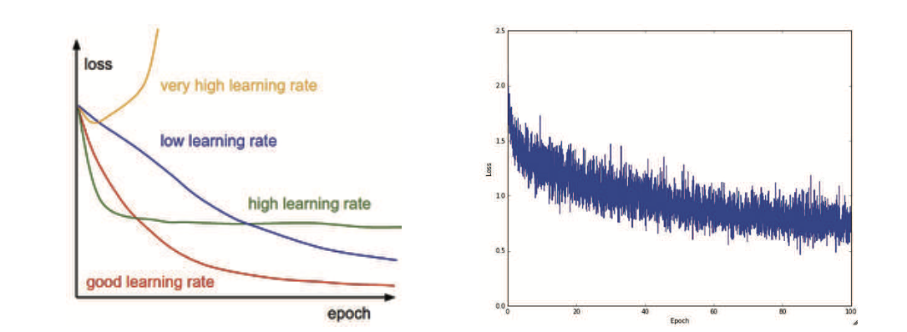
loss
Check train/val Accuracy
Shows overfitting. If val acc stops increaseing for two epochs we could interrupt training
gap between training and validation acc indicates amount of overfitting
in practice: increase regularization L2 weight, collect more data, dropout, etc.
if train and val acc too similar = not complex enough, capacity is to low and make model larger (increase number of parameters)
Ratio of weights: updates
Ratio should be around \(10^{-3}\)
if lower = learning rate might be too low
if higher = learning rate likely too high
Regularization and More on Loss Functions
L2 Regularization
\(L = L_{original} + \lambda\sum_iw^2_i\)
prefers diffuse weight vectors instead of spikey ones therefore forcing the network to use all neurons
has benefit of weights becoming sparse only using most important input
is good for feature selection
but generally L2 better
Combination = Elastic net regulariztaion
\(\lambda_1|w|+\lambda_2w^2\)
Max Norm Constraints
bounds weights by c: \(||w||_2 < c\), with c orders of 3 or 4. Network cant explode even with high learning rates
Dropout
during training neuron is keept active with some probability p (hyperparameter) or set to zero otherwise. “Sampling a neural network from the neural network”
Forward and backpropagation and parameter update for that training case are done only on this thinned network.
if p is set high = less dropout
at test time not droping anymore but we have to add p to get a comparable result as in training since:
a neuron is active \(px + (1-p)0\)
use inverted dropout to overcome changing test-time code
Code
tf. keras.layers.Dropout(0.3)
Bias regularization
Not common but doesn’t seem to harm.
Loss functions
Code
from tf.keras import losses# Cross-Entropy Loss Functionmodel.compile(loss=losses.categorical_crossentropy, optimizer='sgd')# SVM Loss aka hinge lossmodel.compile(loss=losses.hinge, optimizer='sgd')# Squared hinge lossmodel.compile(loss=losses.squared_hinge, optimizer='sgd')
If we have many labels e.g. > 1000 use Hierarchical Softmax
decomposes labels into trees with each label as a branch, softmax can train to distinguish at every node between two labels
If not one single correct label (e.g. hashtags photos):
train classifier for every single attribute
Parameter Updates
Vanilla (regular): change parameters along negative gradient direction
Momentum Update: two additional hyper parameter mu and v with each epoch mu gets increases (build up momentum)
step decay: reducing by factor every few epochs (1/2 every 5 ep, 0.1 every 20 ep)
watch validation error while training, if stuck reduce by constant
exponential decay: \(\alpha = \alpha_0e^{-kt}\) t is iteration number (can use units of epoch too)
1/t: \(\alpha = \alpha_0/(1+kt)\)
keras time-base: \(lr = lr*\frac{1}{1 + decay * epoch}\)
Adam: most common at the moment
If enough computation budget chose slower decay and train for longer time
Hyperparameter Optimazation
initial learning rate
learning rate decay schedule
regularization strength (l2, dropout strength)
Model Ensembles
Multiple different model together often better predictive power. Few approaches forming ensembles:
Same model, different initialization: CV for hyperparameter, different models with diff inti.
Top models during cv: top 10 models and form ensemlbe
different checkpoints of single model: very cheap
Running average of parameters during training
Disadvantage: take longer at test time
CNN (Lecture 4)
Focuses on images and reduces parameters and are more efficient. A unit is not fully connected and input is not flatten but take use of structure of image (widht, height, depth: 3D volume. Neurons are arrange in widgth, height, depth. Output layer is than 1x1x10 (in CIFAR-10) Layers used:
Convolutional Layer (weights and biases, additional hyperparameter)
Fully-Connected Layer (weights and biases, additional hyperparameter)
Convolutional Layer
ConvNets can be interpreted as gradually transforming the images into a representation in which the classes are separable by a linear classifier.
Most computation done. Consists of:
filters: for example 5 x 5 x 3 (5 x 5 pixel for 3 color channels)
during forward pass: filters are convolved (slided)
computes dot product of filter parameters and input
produces a 2-dimensional acitivation map
CNN learn filters that activate for certain visual features
activation maps are stacked along depth dimension
neuron has a receptive field same size as filter (and are only connected locally along wight and height (space) but full connected along depth)
Example:
Input = [32 x 32 x 3]
Receptive field = [5 x 5]
each neuron has weights to a [5 x 5 x 3] region (75 weights + 1 bias)
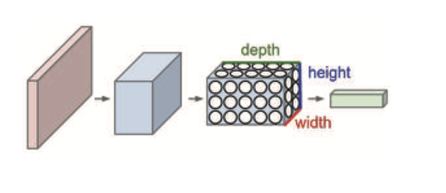
cnn
Hyperparameter in Conv Layer
depth: corresponds to number of filters used, the neuron try to look for something different in the same region of input (depth column/fibre)
stride: sliding filter (1 = 1 pixel at the time)
size zero-padding: zeros around the boarder of image
spatial extent F (receptive field)
dilation: increases gaps (skips pixel) increases receptive field without increasing number of parameters
Output volume is calculated with: \((W-F+2P)/S+1\) where
W = input volume size
F = receptive field size
S = Stride
P = zero-padding
(common setting: F = 3, S & P = 1) The ouput gives widght and height, the depth is determined by deph of ConvLayer We can see which strides can be fit neatly when \((W-F+2P)/stride\) is dividable. Input and output is same chose zero-padding with gernal formular: \(P=(F-1)/2\)
Each of the output volume x output volume x depth of conv, has parameters of F x F x 3(input vector) + 1 bias
Parameter Sharing
we can slice each depth layer into a depth slice (= activation map) each of size output x output:
we constraint the neuron of a slice to use the same weight and biases
the parameter and bias are sometimes refered to as filter (or kernel)
assumption: if learning horizontal edges is important at location xy than it’s important at all other locations. Each slice learns something different of the image
doesn’t make sense in the case of images with specific centered structure(e.g. faces) -> use locally-connected layer
With parameter sharing, it introduces F·F·D1 weights per filter, for a total of (F·F·D1)·K weights and K biases.
Controls overfitting by reducing parameter by taking max value of defined space (often 2x2, with stride 2, depth stays the same, sometimes overlapping pooling with 3x3 and stride = 2)
instead of max we can use average or L2-norm
use same formula \((W-F+2P)/S+1\) depth k stays the same
Another way to reduce parameter is to only use conv layer but use larger stride once in a while
Function form of fully connected and conv layer are the same (dot products)
Any FC layer con be converted to conv
Computional considerations
As is common with Convolutional Networks, notice that most of the memory (and also compute time) is used in the early CONV layers, and that most of the parameters are in the last FC layers. In this particular case, the first FC layer contains 100M weights, out of a total of 140M
Visual Interpreation
viz activation map of some filter (become clearer at later layers)
viz weights (most interpretable at first layer since uses raw pixel as input)
if Noisy pattern = short training, low regularization, overfitted
iteratve over image black out spots and calculate true class probabability which gives us a heatmap with most important area of image
Eearlier features of a ConvNet contain more generic features (e.g. edge detectors or color blob detectors) that should be useful to many tasks, but later layers of the ConvNet becomes progressively more specific to the details of the classes contained in the original dataset
Transfer Learning, when to fine-tune
comes down to size of new dataset and similarity
new dataset small and similar: don’t fine-tune because of overfiting
new dataset large and similar: no problem with overfiting
new dataset small and very different: use activation from earlier layers
new dataset large and very diff: no problem fine-tuning can be done
use small learning rates since we expect to already have good parameters
Neural Language Models
Text preparation
vectorizing = turning text into numbers. Steps:
standardize (i.e. lower case, remove punctiation, convert special character to standard, stemming)
split into units (tokens, tokenization), e.g. characters, words, groups of words
indexing all tokens in the data
each token to vector, vector encoding of indices (one-hot encoding or embedding)
Bag of words vs sequence models
sequence models care about order of input. Bag of words model treat input words as a set discarding order.
Bag-of-words uses n-gram tokenization
sequence models uses world tokenization (sometimes even split into subwords)
One-hot-encoding:
Assumption is that the different tokens you’re encoding are all independent from each other: indeed, one-hot vectors are all orthogonal to one another.
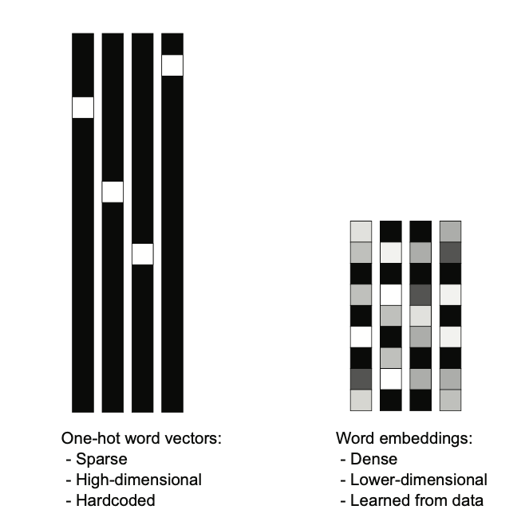
embedding
So, word embeddings pack more information into far fewer dimensions. ## TF-IDF Normalization term frequencey, inverse document frequency:
term frequencey: how often appears in current document
document frequencey: estimates how often appears in dataset
\(\frac{term freq}{doc freq}\)
Word Embedding Layer
It’s thus reasonable to learn a new embedding space with every new task.
Recurrent neural network
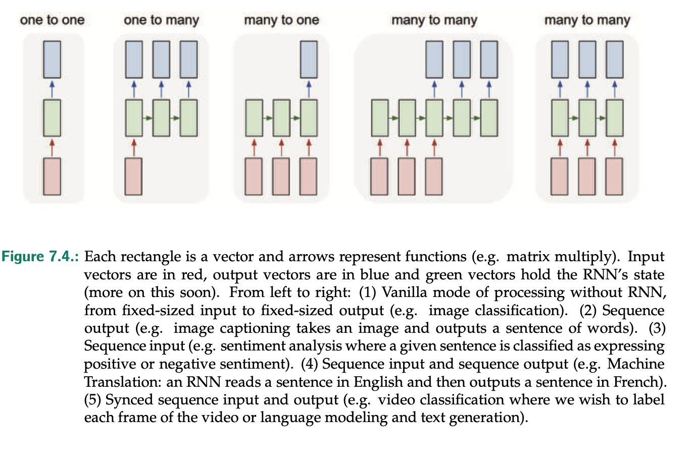
RNN
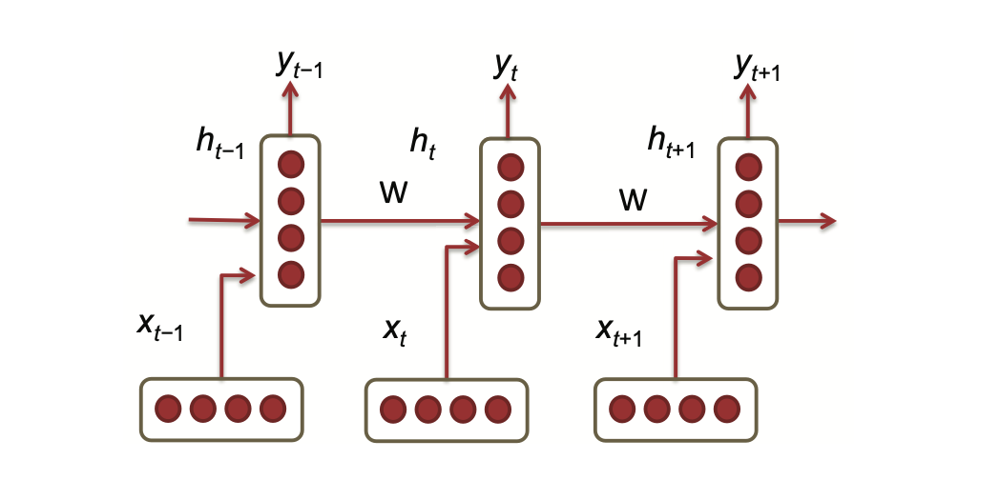
rnnstep
at each time step we have two inputs to the hidden layer: output of previous layer \(h_{t-1}\), and input of timestep \(x_t\)
the previous output is multiplied with weight matrix \(W^{(hh)}\)
\(x_t\) is multiplied with \(W^{(hx)}\)
output is \(h_t\) that is multiple with weight matrix \(W^{(S)}\) and run through a softmax function over vocabulary which ends with prediction output \(\hat y\) for the next word
prediction (uses document context score up to now + word vector at time point): \(\hat y_t = softmax(W^{(S)}h_t)\)
What is interesting here is that the same weights W(hh) and W(hx) are applied repeatedly at each timestep. Thus, the number of parameters the model has to learn is less, and most importantly, is independent of the length of the input sequence - thus defeating the curse of dimensionality!
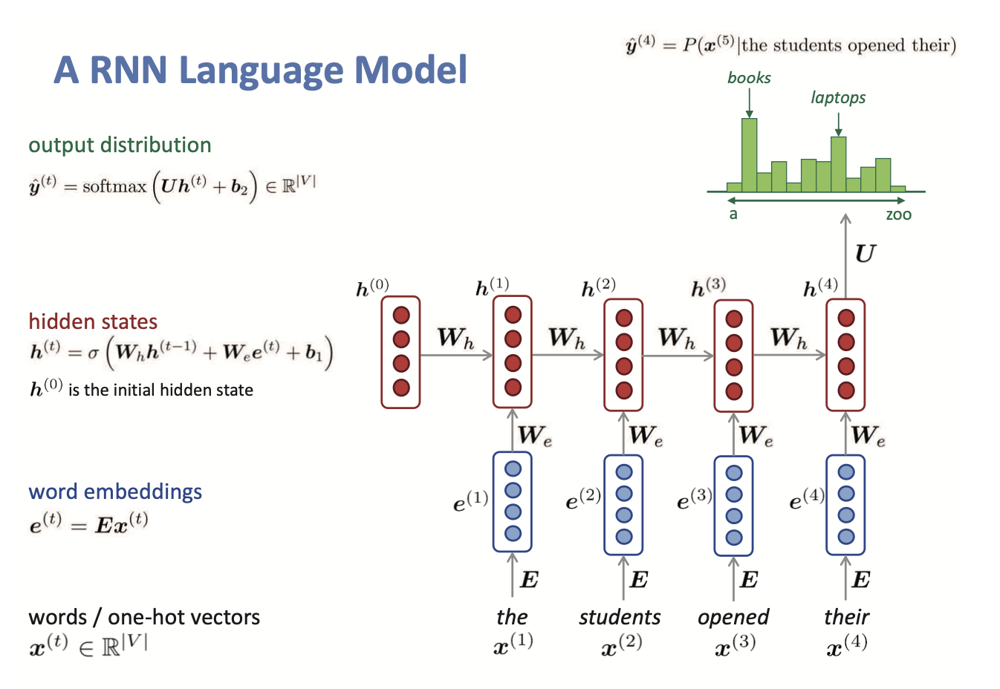
notation slightly different in this picture
We can stack multiple RNN on top
Training / Loss Function (not relevant Exam)
Exploding and Vanishing Gradient Problems
Gradients are shrinking expoentially and vanish, far away steps don’t contribute to the update. Exploding gradients can be clipped (set back to a small number after reaching treshold. Common problems for RNN are very deep (as deep as input length)
Vanishing Gradient fix:
first technique: set \(W_{hh}\) not randomly but as identity matrix
second technique: use ReLU instead of sigmoid
Change architecure to LSTMs
Disadvantages
computation slow since sequential not parallelized
in practice, problematic getting information from steps back (vanishing/exploding gradients)
RNN LSTM
Cell state is the core idea of LSTM which runs down the entire chain where information can flow unchanged.
LSTM can add or remove information from cell state by 3 gates
gates are sigmoid neural(how much should be let in) net layer with pointwise multiplicaiton operation
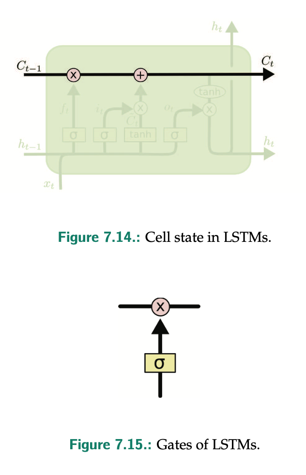
cellgate
Gates
Forget Gate Layer
looks at \(h_{t-1}\) and \(x_t\) and outputs a number between 0 and 1 for each number in the cell state \(C_{t-1}\)
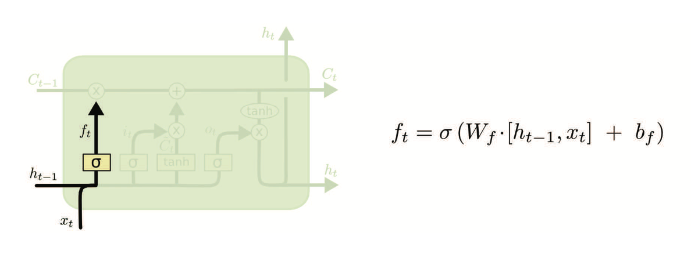
forget gate
Input Gate Layer
what new information is added:
sigmoid layer decides which values are updated
tanh layer creates vector with new values \(C_t\)
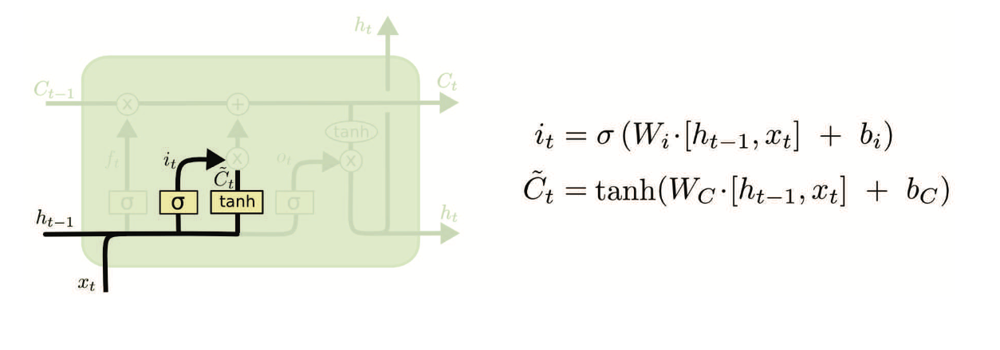
input gate
New Cell Update
Update old cell state \(C_{t-1}\) into \(C_t\)
multiply with forget gate
add \((i_t * C_t)\)
Output Gate
Filtered version of output using a sigmoid layer decicdes with part to output
Next, cell state goes through tanh (push values between -1 and 1) and multiply it by output of sigmoid gate
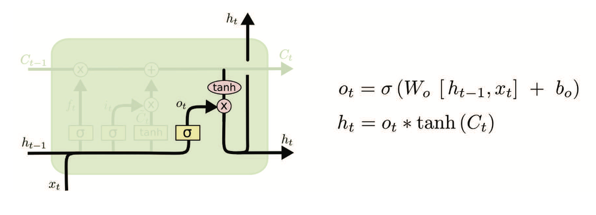
output
Advantages and Dis
LSTM does not guarantee that there is no vanishing / exploding gradient, but it does provide an easier way for the model to learn long-distance dependencies.
Attention and Transformers
Sequence-to-Sequence Learning
Encoder model turn source sequence into intermediate representation
Decoder trained to predict next token i in the target sequence by looking at both previous token 0 to i-1 and the encoded source sequence.
decoder take initial “seed” token [start] and encoded source sequence and predicts first real token in sequence.
next, predicted sequence and encoded source is fed into decoder until stop token is generated [end]
Seq2Seq Architecture - Encoder Takes input and generates a fixed-dimensional context vector C. Multiple LSTMs are stacked together and finay output becomes C. Seq2Seq encoders process sequence in reverse: last thing the model see is first thing it will output and this makes decoder easier to start. once it has the first few words translated correctly, it’s much easier to go on to construct a correct sentence than it is to do so from scratch
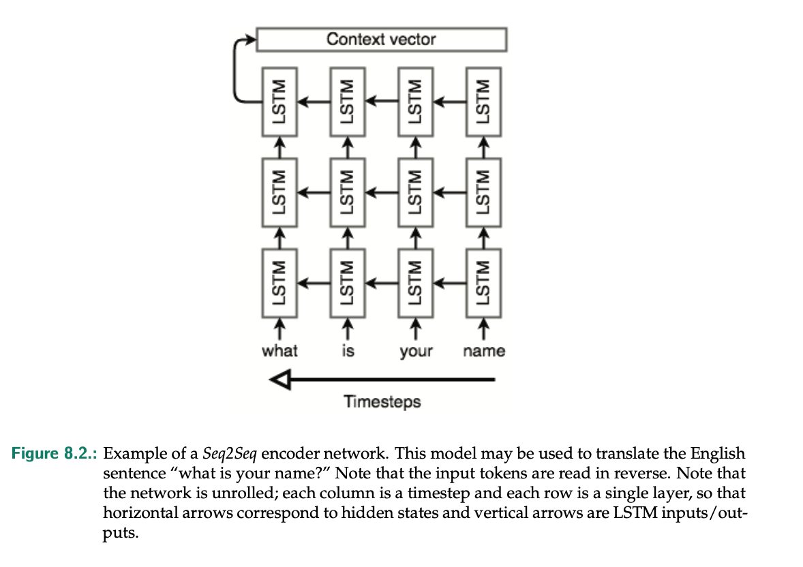
seq2seq encoder
Seq2Seq Architecture - Decoder
uses softmax for output and cross-entropy loss
encoder and decoder are trained at the same time, they both learn the same context vector
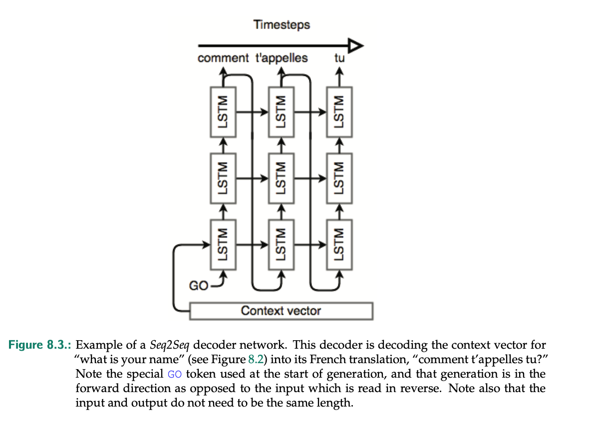
seq2seq decoder
Bidirectional RNN
fixes problem of only considering past input (hidden layer)
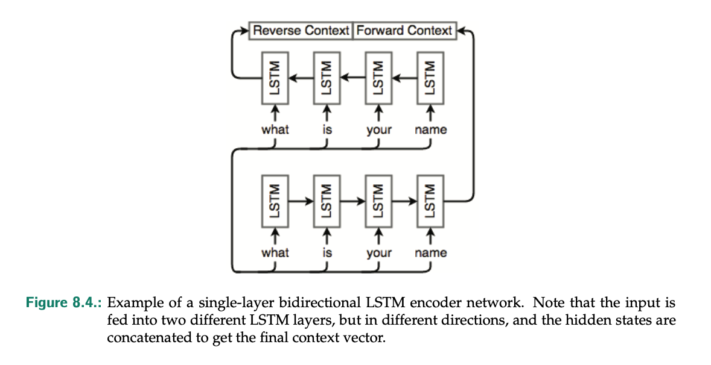
### Attention
can make features context aware
embedding have a fixed position and fixed connections (so not context aware)
similar concept of attention:
max pooling: “all or northing” form of attention, only keep max value
TF-IDF normalization: importance score of tokens
Transformers
Self-Attenation
modulate embeddet representation of a token given context around it
Step 1: compute relevancy scores (=Attention scores) between vector “word” and every other “word” vector. This is done via dot product
Step 2: Sum of all “word” vector in sentence weighted by attention scores (normalize + softamx)
repeat for each word in seq
output become the new vector for a word
Generalized Self-Attention: Query-Key-Value Model
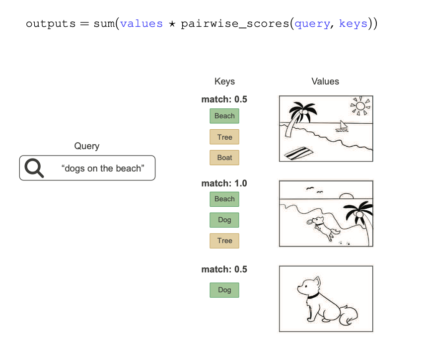
{width = 50%}
In practice keys and vlaues are often the same sequence. In ML query would be target sequence, source sequence would be both keys and values.
for each token in target (“tiempo”) go back to source (“How’s the weather today?”) and identify different bits that are related to “tiempo
Multi-Head Attention
extra dense projections
output space of self-attention gets split into independent subspaces (head), learned separately resulting in three vectors which are concatenated back together.
for each word we calculate it’s query, key and value
\(q_i=W^Qx_i\), \(k_i=W^Kx_1\), \(v_i = W^vx_i\)
where W’s are trainable projection matrices
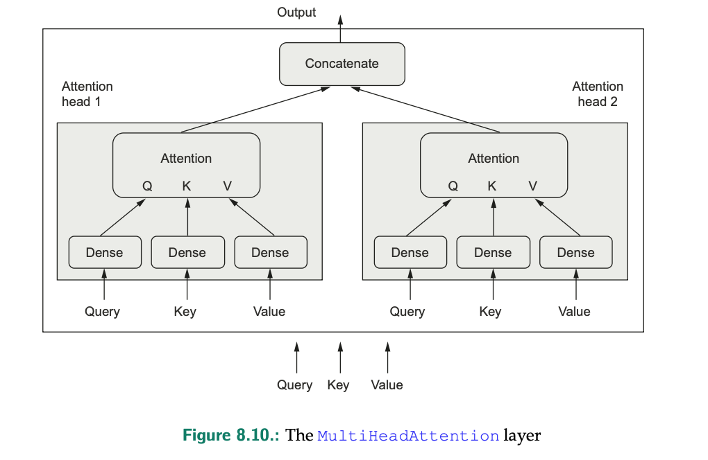
head
Transformer
uses layer normalization instead of batch normalization which means for each token vector we calculate the mean and std of that vector and normalize it.
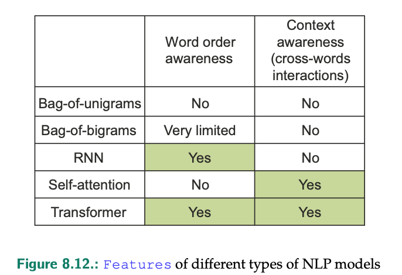
nlp
transformer model get order awareness with positional encoding:
positional embedding: learn position embedding vectors (sequence length needs to be known in advance)
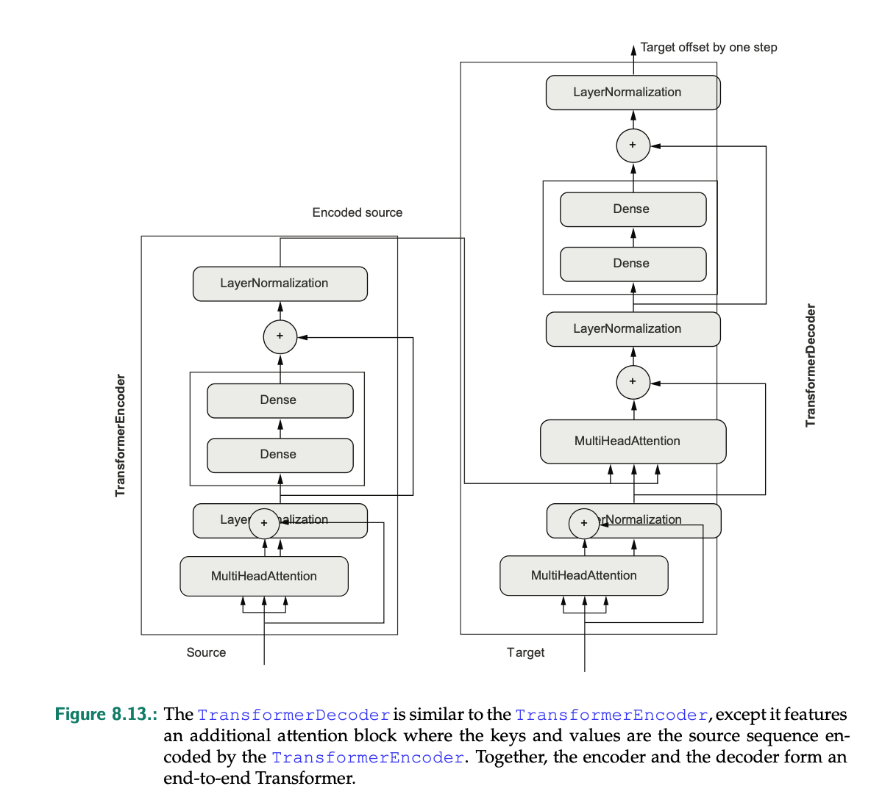
transformer
General notes from exercise
if small dataset (eg. 500) use crossvalidation since simple split would be noisy
zero-center images for each color: faster convergence, stable gradients, less sensitiv to initialization, better model performance, avoid saturated activation function
data augmentation: flip horizontal, rotate imagem, zoom
Training loss starts extremely high (>25), likely due to augmentation introducing harder or noisier examples at the beginning.
Find a good learning rate with custom shedular (see block 3 training and opt)
kernel_initializer parameter in dense layer gives option to set algo for weight init (default is glorot normal init, he_normal is a different one)
batch normalization extremly helpful for training but at cost of overfitting (see block3 )
santiy checks (see block 3 chapter 6)
High variance in validation loss suggests sensitivity to small changes in data (potentially small validation set or noisy labels).
most common to use global L2 (that was cv’ed) and combine with dropout layer with p = 0.5 at the end
batch norm layer normalizes every neuron output of prev layer and add scale and shift if less stric norm is needed.(block 3)
CNN
calculate number of parameters Conv2D: \((kernel_h *kernel_w * C_{input:colors} +1) *C_{out:numberfilter}\)